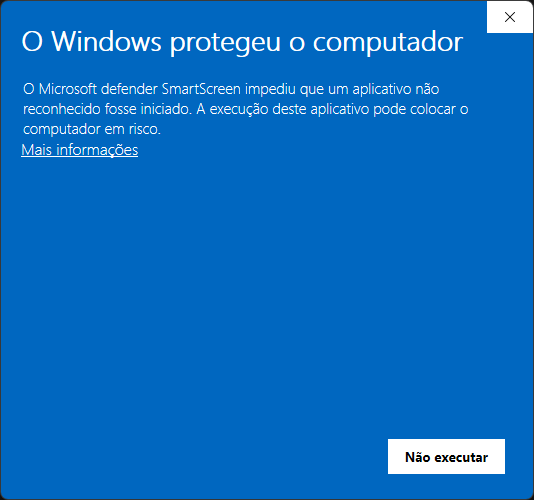
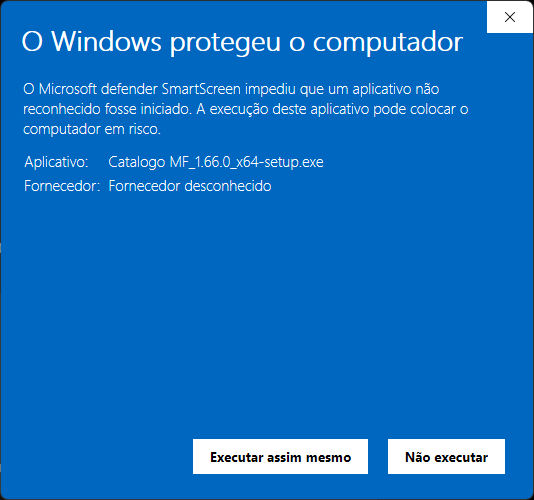
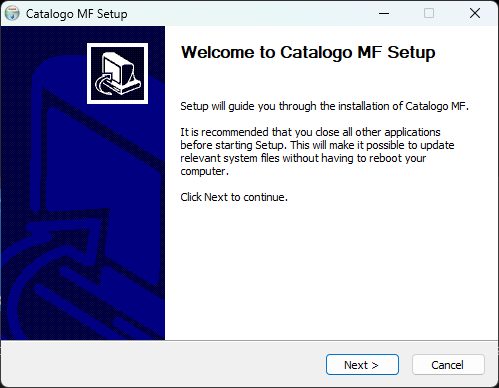

Catálogo Digital de Freios a Ar
O Catálogo Digital MF Freios foi desenvolvido sob medida para técnicos, mecânicos e revendedores que precisam de informação técnica rápida, precisa e confiável direto no computador.
O Windows pode exibir um aviso porque o instalador tem fornecedor desconhecido. Esse aviso, por si só, não comprova a segurança do arquivo. Continue apenas se reconhecer a origem e confiar no download oficial. Se houver uma detecção de ameaça pelo antivírus, interrompa a instalação e entre em contato com o suporte.
Use um computador com Windows 10 ou 11. Siga os passos abaixo:
Clique no botão azul acima e aguarde o download terminar. O arquivo está em formato ZIP.
Abra a pasta Downloads, clique com o botão direito no arquivo ZIP e escolha Extrair Tudo. Abra a pasta extraída e dê dois cliques em Catalogo MF_1.66.0_x64-setup.exe.
Confira se você baixou pelo link oficial desta página. Se decidir continuar, clique em Mais informações.

Após abrir as informações, confira o nome do aplicativo e clique em Executar assim mesmo para continuar.

Na tela Welcome to Catalogo MF Setup, clique em Next > (Próximo) e siga as instruções do instalador até concluir.

Depois de concluir, procure o Catálogo MF no menu Iniciar. Caso o instalador tenha criado um atalho na área de trabalho, você também pode utilizá-lo.
Encontre reparos rapidamente por código MF, aplicação (modelo do caminhão), referência cruzada ou marca. O sistema prioriza de forma automática as correspondências mais exatas.
O banco de dados é instalado direto no seu dispositivo. Você não precisa de internet para realizar as pesquisas diárias na oficina. A sincronização ocorre em segundo plano quando houver conexão.
Linha completa de freios a ar para caminhões e ônibus das marcas: Scania, Volvo, Mercedes-Benz, Volkswagen, Ford, DAF, Iveco, Man e demais marcas do mercado nacional e importado.